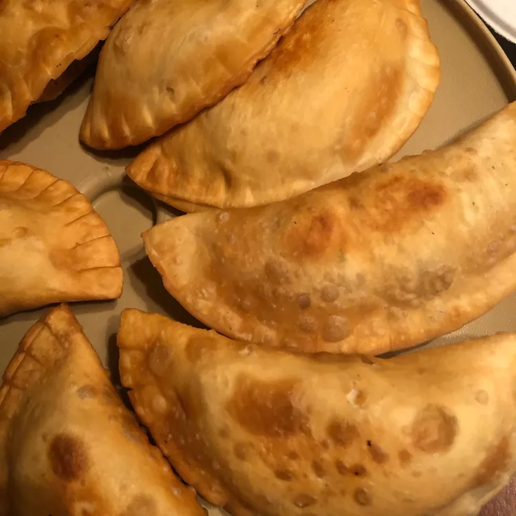

Back to Homepage
Pastelillos

Description
Pastelillos are a Puerto Rican dish, typically served as an appetizer. They are deep-fried meat pies, filled with many
savory ingredients, such as ground beef, green olives, sofrito-seasoned onions, potatoes, and more! As they are very
filling, it makes for a great dish to have in cold weather, as it will warm you right up!
In this recipe, we will be saving time by using frozen empanada dough and premade tomato sauce. However, feel free to
make your own dough and sauce! When I was younger, this was what we would do. It would take a bit of time, but the effort
would be rewarded with the end result!
Ingredients
- 2 tablespoons of olive oil
- 1 pound of extra-lean ground beef
- 1/2 of an onion, diced
- 1/4 cup of tomato sauce
- 6 large pimento-stuffed olives, diced
- 2 tablespoons of sofrito
- 1, 1.41 oz. package of sazón, seasoned with coriander and achiote
- 2 small garlic cloves, minced and crushed
- 1/2 teaspoon of oregano
- 2, 14 oz. packages of frozen empanada dough
- 4 cups of vegetable oil (or more as needed) for frying
Steps
- Meat Filling:
- Heat the olive oil in a large skillet pan over medium heat.
- Add the ground beef to the pan. Cook and stir until browned. This should take 5-7 minutes.
- Once browned, add the onion, tomato sauce, olives, sofrito, sazón, garlic, and oregano and stir.
- Bring the entire mixture down to a simmer and cook until thickened. This should take around 15 minutes
- Forming the Pastelillos:
- Once cooked, add 1 tablespoon of filling to the center of an empanada dough disc.
- Moisten the edges of the disc with water, fold the dough to make a half moon, and use a fork to seal the edges.
- Repeat steps for the rest of the filling and empanada dough discs.
- Frying:
- Heat vegetable oil in a deep fryer or large saucepan to 350 degrees F (175 degrees C).
- In batches, fry pastelillos in the oil until golden brown and bubbly. This should take around 3 minutes.
- Drain pastelillos on paper towels before serving.
Source of recipe